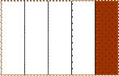
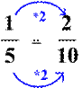
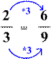
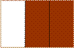
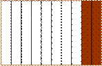
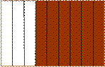
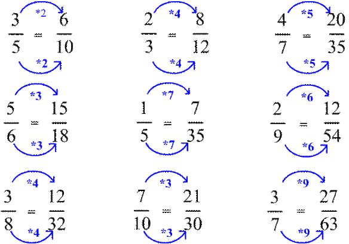

<!DOCTYPE HTML PUBLIC "-//W3C//DTD HTML 3.2//EN">
<html xmlns:v="urn:schemas-microsoft-com:vml"
xmlns:o="urn:schemas-microsoft-com:office:office"
xmlns:w="urn:schemas-microsoft-com:office:word"
xmlns="http://www.w3.org/TR/REC-html40">

<head>
<meta http-equiv=Content-Type content="text/html; charset=windows-1250">
<meta name=ProgId content=Word.Document>
<meta name=Generator content="Microsoft Word 10">
<meta name=Originator content="Microsoft Word 10">
<link rel=File-List href="bovites_elemei/filelist.xml">
<link rel=Edit-Time-Data href="bovites_elemei/editdata.mso">
<!--[if !mso]>
<style>
v\:* {behavior:url(#default#VML);}
o\:* {behavior:url(#default#VML);}
w\:* {behavior:url(#default#VML);}
.shape {behavior:url(#default#VML);}
</style>
<![endif]-->
<title>Matek fogalmak,tételek az ált.isk-ban</title>
<!--[if gte mso 9]><xml>
 <o:DocumentProperties>
  <o:Author>PL</o:Author>
  <o:Template>Normal</o:Template>
  <o:LastAuthor>Pleszkán László</o:LastAuthor>
  <o:Revision>41</o:Revision>
  <o:TotalTime>119</o:TotalTime>
  <o:Created>2003-10-19T11:17:00Z</o:Created>
  <o:LastSaved>2006-04-17T15:37:00Z</o:LastSaved>
  <o:Pages>1</o:Pages>
  <o:Words>54</o:Words>
  <o:Characters>376</o:Characters>
  <o:Lines>3</o:Lines>
  <o:Paragraphs>1</o:Paragraphs>
  <o:CharactersWithSpaces>429</o:CharactersWithSpaces>
  <o:Version>10.2625</o:Version>
 </o:DocumentProperties>
</xml><![endif]--><!--[if gte mso 9]><xml>
 <w:WordDocument>
  <w:Zoom>80</w:Zoom>
  <w:SpellingState>Clean</w:SpellingState>
  <w:GrammarState>Clean</w:GrammarState>
  <w:HyphenationZone>21</w:HyphenationZone>
  <w:BrowserLevel>MicrosoftInternetExplorer4</w:BrowserLevel>
 </w:WordDocument>
</xml><![endif]-->
<style>
<!--
 /* Style Definitions */
 p.MsoNormal, li.MsoNormal, div.MsoNormal
	{mso-style-parent:"";
	margin:0cm;
	margin-bottom:.0001pt;
	mso-pagination:widow-orphan;
	font-size:12.0pt;
	font-family:"Times New Roman";
	mso-fareast-font-family:"Times New Roman";}
a:link, span.MsoHyperlink
	{color:blue;
	text-decoration:underline;
	text-underline:single;}
a:visited, span.MsoHyperlinkFollowed
	{color:blue;
	text-decoration:underline;
	text-underline:single;}
pre
	{margin:0cm;
	margin-bottom:.0001pt;
	mso-pagination:widow-orphan;
	font-size:10.0pt;
	font-family:"Courier New";
	mso-fareast-font-family:"Times New Roman";}
@page Section1
	{size:595.3pt 841.9pt;
	margin:70.85pt 70.85pt 70.85pt 70.85pt;
	mso-header-margin:35.4pt;
	mso-footer-margin:35.4pt;
	mso-paper-source:0;}
div.Section1
	{page:Section1;}
-->
</style>
<!--[if gte mso 10]>
<style>
 /* Style Definitions */
 table.MsoNormalTable
	{mso-style-name:"Normál táblázat";
	mso-tstyle-rowband-size:0;
	mso-tstyle-colband-size:0;
	mso-style-noshow:yes;
	mso-style-parent:"";
	mso-padding-alt:0cm 5.4pt 0cm 5.4pt;
	mso-para-margin:0cm;
	mso-para-margin-bottom:.0001pt;
	mso-pagination:widow-orphan;
	font-size:10.0pt;
	font-family:"Times New Roman";}
table.MsoTableGrid
	{mso-style-name:"Rácsos táblázat";
	mso-tstyle-rowband-size:0;
	mso-tstyle-colband-size:0;
	border:solid windowtext 1.0pt;
	mso-border-alt:solid windowtext .5pt;
	mso-padding-alt:0cm 5.4pt 0cm 5.4pt;
	mso-border-insideh:.5pt solid windowtext;
	mso-border-insidev:.5pt solid windowtext;
	mso-para-margin:0cm;
	mso-para-margin-bottom:.0001pt;
	mso-pagination:widow-orphan;
	font-size:10.0pt;
	font-family:"Times New Roman";}
</style>
<![endif]--><!--[if gte mso 9]><xml>
 <o:shapedefaults v:ext="edit" spidmax="15362">
  <o:colormru v:ext="edit" colors="#eaeaea"/>
  <o:colormenu v:ext="edit" fillcolor="#eaeaea"/>
 </o:shapedefaults></xml><![endif]--><!--[if gte mso 9]><xml>
 <o:shapelayout v:ext="edit">
  <o:idmap v:ext="edit" data="1"/>
 </o:shapelayout></xml><![endif]-->
</head>

<body bgcolor="#EAEAEA" lang=HU link=blue vlink=blue style='tab-interval:35.45pt'>

<div class=Section1>

<p class=MsoNormal><o:p>&nbsp;</o:p></p>

<div align=center>

<table class=MsoTableGrid border=0 cellspacing=0 cellpadding=0 width=662
 style='width:496.15pt;border-collapse:collapse;mso-yfti-tbllook:480;
 mso-padding-alt:0cm 5.4pt 0cm 5.4pt'>
 <tr style='mso-yfti-irow:0'>
  <td width=662 colspan=4 valign=top style='width:496.15pt;padding:0cm 5.4pt 0cm 5.4pt'>
  <p class=MsoNormal style='tab-stops:54.0pt'><span style='font-size:13.0pt;
  font-family:Arial'><o:p>&nbsp;</o:p></span></p>
  </td>
 </tr>
 <tr style='mso-yfti-irow:1'>
  <td width=662 colspan=4 valign=top style='width:496.15pt;background:#00CCFF;
  padding:0cm 5.4pt 0cm 5.4pt'>
  <p class=MsoNormal style='tab-stops:54.0pt'><b style='mso-bidi-font-weight:
  normal'><span style='font-family:Arial'><span style='mso-spacerun:yes'>  
  </span></span></b><b style='mso-bidi-font-weight:normal'><span
  style='font-size:5.0pt;font-family:Arial'><o:p></o:p></span></b></p>
  <p class=MsoNormal style='text-align:justify;tab-stops:54.0pt'><b
  style='mso-bidi-font-weight:normal'><span style='font-family:Arial'><span
  style='mso-spacerun:yes'>   </span><span style='color:#993300'>Bõvítés</span>kor
  a tört számlálóját és nevezõjét ugyanazzal a nullától különbözõ számmal
  szorozzuk. A tört értéke nem változik, csak az alakja. <i style='mso-bidi-font-style:
  normal'>A bõvítés során a számláló és a nevezõ abszolút értéke nagyobb, mondhatjuk
  úgy, hogy „bõvebb” lesz. <o:p></o:p></i></span></b></p>
  <p class=MsoNormal style='tab-stops:54.0pt'><b style='mso-bidi-font-weight:
  normal'><span style='font-size:5.0pt;font-family:Arial'><o:p>&nbsp;</o:p></span></b></p>
  </td>
 </tr>
 <tr style='mso-yfti-irow:2'>
  <td width=662 colspan=4 valign=top style='width:496.15pt;padding:0cm 5.4pt 0cm 5.4pt'>
  <p class=MsoNormal style='tab-stops:54.0pt'><span style='font-size:13.0pt;
  font-family:Arial'><o:p>&nbsp;</o:p></span></p>
  <p class=MsoNormal style='tab-stops:54.0pt'><span style='font-size:13.0pt;
  font-family:Arial'><o:p>&nbsp;</o:p></span></p>
  <p class=MsoNormal style='tab-stops:54.0pt'><span style='font-size:13.0pt;
  font-family:Arial'><o:p>&nbsp;</o:p></span></p>
  <p class=MsoNormal style='tab-stops:54.0pt'><span style='font-size:13.0pt;
  font-family:Arial'><o:p>&nbsp;</o:p></span></p>
  </td>
 </tr>
 <tr style='mso-yfti-irow:3'>
  <td width=165 valign=top style='width:124.0pt;padding:0cm 5.4pt 0cm 5.4pt'>
  <p class=MsoNormal align=center style='text-align:center;tab-stops:54.0pt'><!--[if gte vml 1]><v:shapetype
   id="_x0000_t75" coordsize="21600,21600" o:spt="75" o:preferrelative="t"
   path="m@4@5l@4@11@9@11@9@5xe" filled="f" stroked="f">
   <v:stroke joinstyle="miter"/>
   <v:formulas>
    <v:f eqn="if lineDrawn pixelLineWidth 0"/>
    <v:f eqn="sum @0 1 0"/>
    <v:f eqn="sum 0 0 @1"/>
    <v:f eqn="prod @2 1 2"/>
    <v:f eqn="prod @3 21600 pixelWidth"/>
    <v:f eqn="prod @3 21600 pixelHeight"/>
    <v:f eqn="sum @0 0 1"/>
    <v:f eqn="prod @6 1 2"/>
    <v:f eqn="prod @7 21600 pixelWidth"/>
    <v:f eqn="sum @8 21600 0"/>
    <v:f eqn="prod @7 21600 pixelHeight"/>
    <v:f eqn="sum @10 21600 0"/>
   </v:formulas>
   <v:path o:extrusionok="f" gradientshapeok="t" o:connecttype="rect"/>
   <o:lock v:ext="edit" aspectratio="t"/>
  </v:shapetype><v:shape id="_x0000_i1025" type="#_x0000_t75" style='width:110.25pt;
   height:70.5pt'>
   <v:imagedata src="bovites_elemei/image001.gif" o:title="otod1g"/>
  </v:shape><![endif]--><![if !vml]><![endif]><span
  style='font-size:13.0pt;font-family:Arial'><o:p></o:p></span></p>
  </td>
  <td width=165 rowspan=3 style='width:124.05pt;border:none;border-right:solid #993366 2.25pt;
  padding:0cm 5.4pt 0cm 5.4pt'>
  <p class=MsoNormal style='tab-stops:54.0pt'><span style='font-size:13.0pt;
  font-family:Arial'><!--[if gte vml 1]><v:shape id="_x0000_i1026" type="#_x0000_t75"
   style='width:68.25pt;height:73.5pt'>
   <v:imagedata src="bovites_elemei/image015.gif" o:title="ir15210"/>
  </v:shape><![endif]--><![if !vml]><![endif]><o:p></o:p></span></p>
  </td>
  <td width=165 rowspan=3 style='width:124.05pt;border:none;mso-border-left-alt:
  solid #993366 2.25pt;padding:0cm 5.4pt 0cm 5.4pt'>
  <p class=MsoNormal align=right style='text-align:right;tab-stops:54.0pt'><span
  style='font-size:13.0pt;font-family:Arial'><!--[if gte vml 1]><v:shape id="_x0000_i1027"
   type="#_x0000_t75" style='width:63.75pt;height:73.5pt'>
   <v:imagedata src="bovites_elemei/image017.gif" o:title="ir2369"/>
  </v:shape><![endif]--><![if !vml]><![endif]><o:p></o:p></span></p>
  </td>
  <td width=165 valign=top style='width:124.05pt;padding:0cm 5.4pt 0cm 5.4pt'>
  <p class=MsoNormal align=center style='text-align:center;tab-stops:54.0pt'><!--[if gte vml 1]><v:shape
   id="_x0000_i1028" type="#_x0000_t75" style='width:111pt;height:71.25pt'>
   <v:imagedata src="bovites_elemei/image008.gif" o:title="harmad2"/>
  </v:shape><![endif]--><![if !vml]><![endif]><span
  style='font-size:13.0pt;font-family:Arial'><o:p></o:p></span></p>
  </td>
 </tr>
 <tr style='mso-yfti-irow:4'>
  <td width=165 valign=top style='width:124.0pt;padding:0cm 5.4pt 0cm 5.4pt'>
  <p class=MsoNormal style='tab-stops:54.0pt'><span style='font-size:13.0pt;
  font-family:Arial'><o:p>&nbsp;</o:p></span></p>
  </td>
  <td width=165 valign=top style='width:124.05pt;padding:0cm 5.4pt 0cm 5.4pt'>
  <p class=MsoNormal style='tab-stops:54.0pt'><span style='font-size:13.0pt;
  font-family:Arial'><o:p>&nbsp;</o:p></span></p>
  </td>
 </tr>
 <tr style='mso-yfti-irow:5'>
  <td width=165 valign=top style='width:124.0pt;padding:0cm 5.4pt 0cm 5.4pt'>
  <p class=MsoNormal align=center style='text-align:center;tab-stops:54.0pt'><!--[if gte vml 1]><v:shape
   id="_x0000_i1029" type="#_x0000_t75" style='width:111pt;height:71.25pt'>
   <v:imagedata src="bovites_elemei/image006.gif" o:title="tized2g"/>
  </v:shape><![endif]--><![if !vml]><![endif]><span
  style='font-size:13.0pt;font-family:Arial'><o:p></o:p></span></p>
  </td>
  <td width=165 valign=top style='width:124.05pt;padding:0cm 5.4pt 0cm 5.4pt'>
  <p class=MsoNormal align=center style='text-align:center;tab-stops:54.0pt'><!--[if gte vml 1]><v:shape
   id="_x0000_i1030" type="#_x0000_t75" style='width:111pt;height:71.25pt'>
   <v:imagedata src="bovites_elemei/image012.gif" o:title="kilenced6g"/>
  </v:shape><![endif]--><![if !vml]><![endif]><span
  style='font-size:13.0pt;font-family:Arial'><o:p></o:p></span></p>
  </td>
 </tr>
 <tr style='mso-yfti-irow:6'>
  <td width=331 colspan=2 valign=top style='width:248.05pt;border-top:none;
  border-left:none;border-bottom:solid #993366 2.25pt;border-right:solid #993366 2.25pt;
  padding:0cm 5.4pt 0cm 5.4pt'>
  <p class=MsoNormal align=center style='text-align:center;tab-stops:54.0pt'><span
  style='font-size:13.0pt;font-family:Arial'><o:p>&nbsp;</o:p></span></p>
  </td>
  <td width=331 colspan=2 valign=top style='width:248.1pt;border:none;
  border-bottom:solid #993366 2.25pt;mso-border-left-alt:solid #993366 2.25pt;
  padding:0cm 5.4pt 0cm 5.4pt'>
  <p class=MsoNormal align=center style='text-align:center;tab-stops:54.0pt'><span
  style='font-size:13.0pt;font-family:Arial'><o:p>&nbsp;</o:p></span></p>
  </td>
 </tr>
 <tr style='mso-yfti-irow:7'>
  <td width=662 colspan=4 valign=top style='width:496.15pt;border:none;
  mso-border-top-alt:solid #993366 2.25pt;padding:0cm 5.4pt 0cm 5.4pt'>
  <p class=MsoNormal align=center style='text-align:center;tab-stops:54.0pt'><span
  style='font-size:13.0pt;font-family:Arial'><o:p>&nbsp;</o:p></span></p>
  </td>
 </tr>
 <tr style='mso-yfti-irow:8'>
  <td width=662 colspan=4 valign=top style='width:496.15pt;padding:0cm 5.4pt 0cm 5.4pt'>
  <p class=MsoNormal align=center style='text-align:center;tab-stops:54.0pt'><span
  style='font-size:13.0pt;font-family:Arial'><o:p>&nbsp;</o:p></span></p>
  <p class=MsoNormal align=center style='text-align:center;tab-stops:54.0pt'><span
  style='font-size:13.0pt;font-family:Arial'><o:p>&nbsp;</o:p></span></p>
  <p class=MsoNormal align=center style='text-align:center;tab-stops:54.0pt'><span
  style='font-size:13.0pt;font-family:Arial'><o:p>&nbsp;</o:p></span></p>
  </td>
 </tr>
 <tr style='mso-yfti-irow:9'>
  <td width=662 colspan=4 valign=top style='width:496.15pt;padding:0cm 5.4pt 0cm 5.4pt'>
  <p class=MsoNormal align=center style='text-align:center;tab-stops:54.0pt'><span
  style='font-size:13.0pt;font-family:Arial'><o:p>&nbsp;</o:p></span></p>
  </td>
 </tr>
 <tr style='mso-yfti-irow:10'>
  <td width=662 colspan=4 valign=top style='width:496.15pt;padding:0cm 5.4pt 0cm 5.4pt'>
  <p class=MsoNormal align=center style='text-align:center;tab-stops:54.0pt'><span
  style='font-size:13.0pt;font-family:Arial'><!--[if gte vml 1]><v:shape id="_x0000_i1031"
   type="#_x0000_t75" style='width:438pt;height:306.75pt;
   mso-position-horizontal:absolute'>
   <v:imagedata src="bovites_elemei/image003.gif" o:title="bovitabr"/>
  </v:shape><![endif]--><![if !vml]><![endif]><o:p></o:p></span></p>
  </td>
 </tr>
 <tr style='mso-yfti-irow:11'>
  <td width=662 colspan=4 valign=top style='width:496.15pt;padding:0cm 5.4pt 0cm 5.4pt'>
  <p class=MsoNormal style='tab-stops:54.0pt'><span style='font-size:13.0pt;
  font-family:Arial'><o:p>&nbsp;</o:p></span></p>
  <p class=MsoNormal style='tab-stops:54.0pt'><span style='font-size:13.0pt;
  font-family:Arial'><o:p>&nbsp;</o:p></span></p>
  </td>
 </tr>
 <tr style='mso-yfti-irow:12'>
  <td width=662 colspan=4 valign=top style='width:496.15pt;padding:0cm 5.4pt 0cm 5.4pt'>
  <p class=MsoNormal style='text-align:justify;tab-stops:54.0pt'><b
  style='mso-bidi-font-weight:normal'><span style='font-family:Arial'><span
  style='mso-spacerun:yes'>   </span>A bõvítéskor a nyilakat természetesen nem
  kötelezõ kitenni. Amíg ismerkedsz ezzel a mûvelettel, javaslom, hogy használd
  õket! <o:p></o:p></span></b></p>
  </td>
 </tr>
 <tr style='mso-yfti-irow:13'>
  <td width=662 colspan=4 valign=top style='width:496.15pt;padding:0cm 5.4pt 0cm 5.4pt'>
  <p class=MsoNormal style='tab-stops:54.0pt'><span style='font-size:13.0pt;
  font-family:Arial'><o:p>&nbsp;</o:p></span></p>
  </td>
 </tr>
 <tr style='mso-yfti-irow:14;mso-yfti-lastrow:yes'>
  <td width=662 colspan=4 valign=top style='width:496.15pt;padding:0cm 5.4pt 0cm 5.4pt'>
  <p class=MsoNormal style='tab-stops:54.0pt'><span style='font-size:13.0pt;
  font-family:Arial'><o:p>&nbsp;</o:p></span></p>
  </td>
 </tr>
</table>

</div>

<pre style='text-align:center'><o:p>&nbsp;</o:p></pre></div>

</body>

</html>
